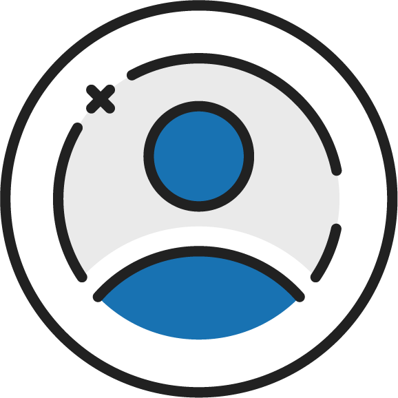

<ion-content color="light">
  <ion-grid>

    <ion-row>
      <ion-col size="6" offset="3" [routerDirection]="'forward'" [routerLink]="['/login']" (click)="selectMode('customer')">
        <div class="col-inner-conatiner padding">
          
          <div class="text">Continue as Customer</div>
        </div>
      </ion-col>
    </ion-row>

    <ion-row class="gab">
      Select Mode
    </ion-row>

    <ion-row>
      <ion-col size="6" offset="3" [routerDirection]="'forward'" [routerLink]="['/login']" (click)="selectMode('employee')">
        <div class="col-inner-conatiner padding">
          
          <div class="text">Continue as Employee</div>
        </div>
      </ion-col>
    </ion-row>

  </ion-grid>
</ion-content>
